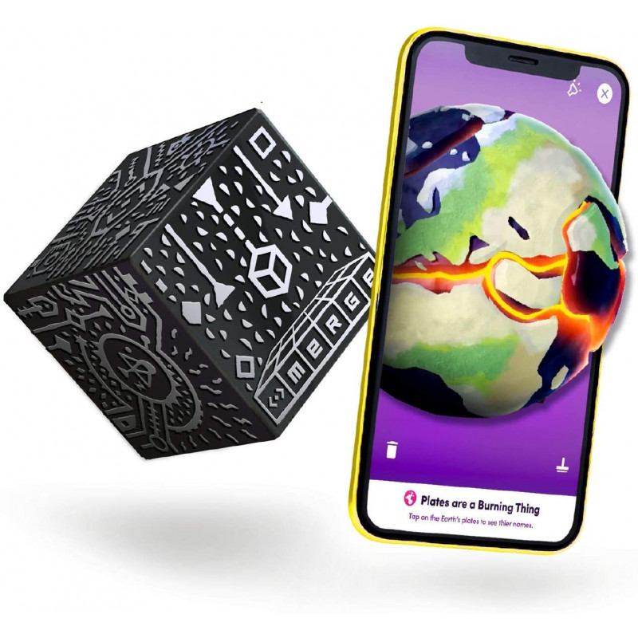
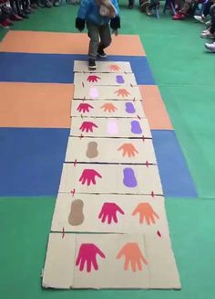
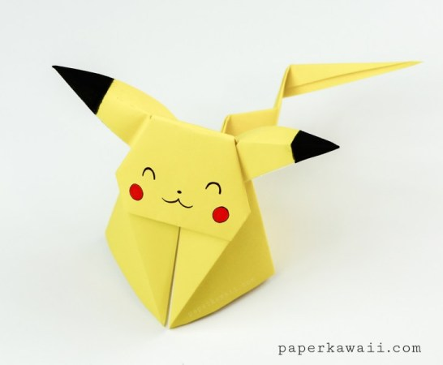

En esta sección, los niños podrán disfrutar de una variedad de juegos diseñados para diferentes edades y habilidades. Cada juego viene con una breve descripción e instrucciones.
MergeCube es una herramienta para la visualización e interacción con modelos 3D mediante realidad aumentada. Es decir, en la pantalla de celular o tablet podes ver cómo los modelos 3D se superponen a la imagen que esté viendo la cámara.
En el siguiente enlace podes descargar una plantilla para crear tu propio MergeCube de papel:
Plantilla descargable: https://mergecube.com/paper-pdf
Este juego consiste en dibujar en papel, varias figuras de los pies y manos. Podes descargar las plantillas en el siguiente pdf o dibujarlas vos mismo!
En el siguiente enlace podes descargar una plantilla: https://hazlotumismoencasa.com/wp-content/uploads/2020/03/Juego-mano-pie.pdf
La manera mas divertida de entretener a los chicos y solo hace falta papel. La técnica de origami es muy buena para ampliar las destrezas manuales!
A continuacion te dejamos varias propuestas para hacer origami: